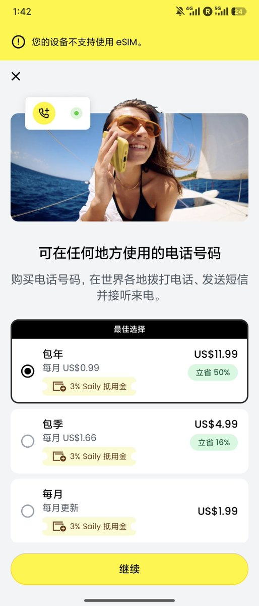
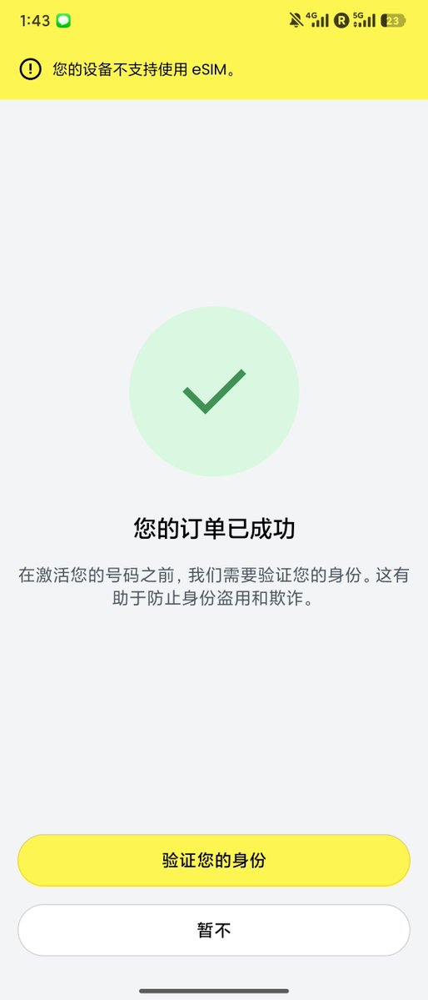
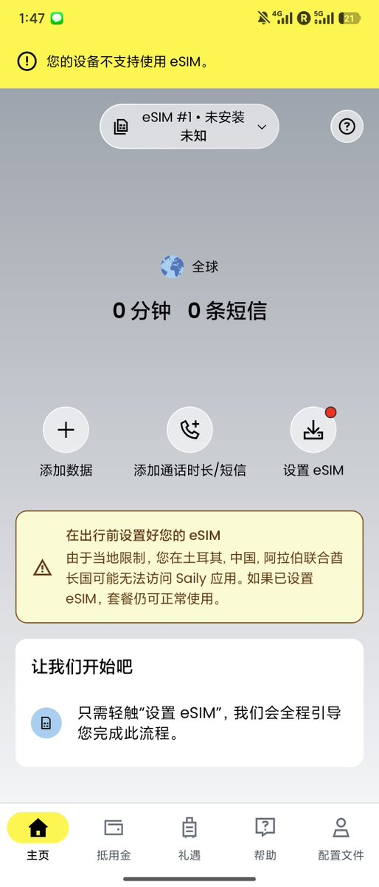
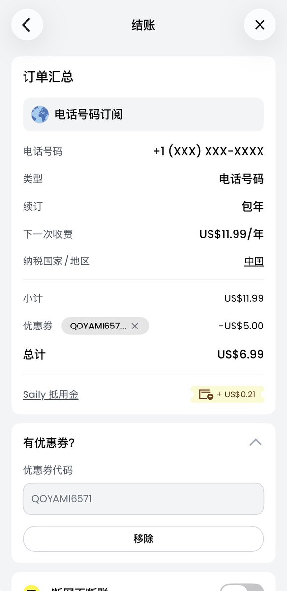
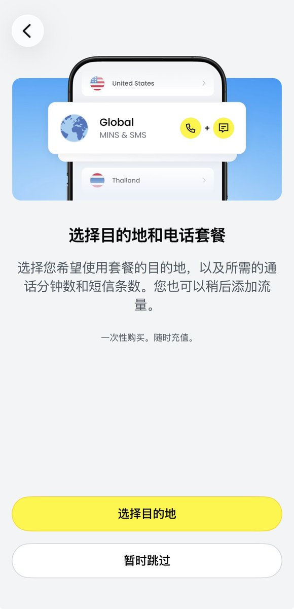

我也跟风搞了个Saily美国号，其实步骤很简单，只需要下载个Saily App就可以开通
步骤很简单：
探索电话号码，包年，暂时跳过，有优惠券，NYARIM0233，应用，支付，实名（kyc可选），安装eSIM
新用户走邀请码可以省5刀，同时我也会获得5刀。我走的是星球dalao的码，也可以分享自己的码给朋友
步骤很简单：
探索电话号码，包年，暂时跳过，有优惠券，NYARIM0233，应用，支付，实名（kyc可选），安装eSIM
新用户走邀请码可以省5刀，同时我也会获得5刀。我走的是星球dalao的码，也可以分享自己的码给朋友




